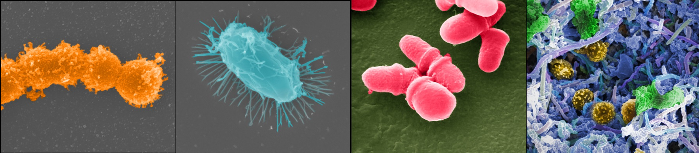
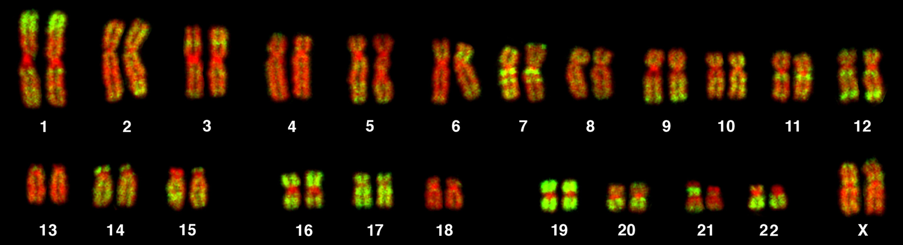

My research focus over the last 10 years has been on the safety evaluation of pesticides, publishing around 80 scientific articles that have been cited more than 6,500 times. My main line of research is to identify gaps in the evaluation of pesticide toxicity, and to propose solutions to better predict their effects in human populations. In the sections below, I describe important milestones from this research programme.

Effects of pesticides on the gut microbiome
Health effects of pesticides are not always correctly predicted before products are released for marketing. Laboratory studies are often insufficient to detect effects of pesticides. This is the case for effects on the gut microbiome which are generally not measured in the battery of tests performed to regulate pesticide adverse effects.
Effects of the major herbicide glyphosate on the gut microbiome are heavily debated. Because glyphosate can target the metabolism of gastrointestinal microorganisms in the same manner it targets plants to act as a weedkiller, major concerns have been raised regarding the potential antibiotic effects of glyphosate. However, this had never been tested. We combined high-throughput biology techniques (shotgun metagenomics and metabolomics) to assess effects of glyphosate on the caecum microbiota of Sprague-Dawley rats. (Mesnage et al., 2021). Glyphosate did not act as an antibiotic in the gut. In order for glyphosate to act as an antibiotic, it needs to cause a significant shortage in the production of compounds in bacteria called aromatic amino acids. This is how glyphosate kills plants. More specifically, it interrupts a series of chemical reactions within the shikimate pathway. We reveal for the first time that glyphosate does inhibit the shikimate pathway in the rat gut microbiome. This could have health impact. However, glyphosate likely did not kill bacteria via its impact on the shikimate pathway, because bacteria do not need the shikimate pathway to get the aromatic amino acids they need. Like us, they get them from the food we eat.
Glyphosate’s impact on the shikimate pathway had other consequences. A multitude of small molecules (metabolites) accumulated, or were depleted in the rat gut. The bacterial composition of the gut microbiome also changed, with some bacteria present at higher levels in the glyphosate exposed animals. We have an explanation for this: the glyphosate molecule contains one atom of phosphorus, and it is very likely that this phosphorus atomic bond was used as a source of energy by some bacteria to proliferate in the rat gut.
We evaluated this by measuring if the changes in gut microbiome chemistry caused changes in blood composition. The compounds altered as a consequence of the interruption of the shikimate pathway by glyphosate in the gut were mostly unchanged in blood. However, other chemicals had their levels disrupted by glyphosate, with some indicating that glyphosate caused oxidative stress. This oxidative stress was even more pronounced when we tested a commercial herbicide containing glyphosate called Roundup Bioflow (also known as MON 52276, the representative glyphosate herbicide in the EU).
We performed another study and evaluated if urinary glyphosate excretion associates with changes in faecal microbial community composition and metabolite profiles in 65 adult twins in the UK. This is part of a larger project in which we are comparing the effects of organic and non-organic diets on the composition of the gut microbiota of adult twins from the TwinsUK cohort. This study was done in the UK on 130 individuals (Mesnage et al., 2022). Pyrethroid and/or organophosphorus insecticide residues were found in all urine samples, while the herbicide glyphosate was found in 53% of individuals. Food frequency questionnaires showed that residues from organophosphates were higher with increased consumption of fruit and vegetables. A total of 34 associations between pesticide residue concentrations and faecal metabolite concentrations were detected. Glyphosate excretion was positively associated with an overall increased bacterial species richness, as well as to fatty acid metabolites and phosphate levels.
To further address scientific knowledge gaps, we describe for the first time the effects of glyphosate and a Roundup glyphosate-based herbicide on infant gut microbiota using SHIME technology, which mimics the entire gastrointestinal tract (Mesnage et al., 2022). Roundup and to a lesser extent glyphosate caused an increase in fermentation activity, resulting in acidification of the microbial environment. Ammonium production reflecting proteolytic activities was increased by Roundup exposure. Global metabolomics revealed large scale disturbances in metabolite profiles, including an increased abundance of long chain polyunsaturated fatty acids (n3 and n6). Our results suggested that lactobacilli had their growth stimulated as a result of microenvironment acidification.
Despite growing evidence linking the presence of different categories of fungi in the human gut to observable diseases and health symptoms, no study has investigated if glyphosate can affect these fungal populations. As part of the multifaceted Global Glyphosate Study., which was launched with the aim of providing the most comprehensive evaluation of glyphosate-based herbicides covering long-term toxicity, carcinogenicity and multi-generational effects, we studied changes in bacterial and fungal populations in the caecum of rats exposed prenatally until adulthood (13 weeks after weaning) to three doses of glyphosate (0.5, 5, 50 mg/kg body weight/day), or to the herbicide formulations Roundup Bioflow and RangerPro at the same glyphosate-equivalent doses (Mesnage et al., 2022). Altogether, our data suggested that glyphosate and its formulations caused profound changes in gut microbiome composition by affecting the fitness of major commensals, which in turn reduced competition and allowed opportunistic fungi to grow in the gut.
Beneficial effects of organic food consumption and toxic effects of pesticides in the human population
Despite the widely recognized benefits of organic farming and food consumption, its endorsement by government food standards agencies and the scientific community is generally lacking. One major reason for this is the lack of scientific studies showing direct health benefits of an organic diet.
Our study on the 65 adult twins in the UK performed in collaboration with the group of Pr. Tim Spector originally aimed at testing the effects of organic food consumption. Twins were selected based on their answers to a food frequency questionnaire (FFQ) modified to include a question on organic food consumption. Our aim was to define two groups of individuals, one less likely to be exposed to pesticides than the other because of organic food consumption. A total of 977, mostly female, twin pairs answered questions on organic food dietary intake from the TwinsUK questionnaire. Among these 977 individuals, 65 twin monozygotic twin pairs were found to be discordant for organic food consumption (one twin eats an organic diet whereas the other does not). However, when a new FFQ was performed at the time of urine collection, only 15 pairs were discordant for organic food consumption. The inconsistency in the answers provided to the nutrition questionnaire, convinced us to drop this component of the investigation, as any findings would be deemed as inconclusive.
The observed inconsistency between the results of the FFQ before recruitment and during the study is an important finding, which supports the need for dietary intervention studies to accurately determine the effects of an organic diet on the gut microbiome. An inherent difficulty in studies trying to link the consumption of organic food to health consequences is the number of co-variables or confounding factors, which are a natural part of human life. Organic food consumption is by itself multifactorial and its health effects could be due to a reduced exposure to pesticides and/or antibiotics, or to an increased intake of micronutrients. We addressed this topic in a review (Mesnage et al., 2020), and started the first controlled dietary intervention of the health benefits of an organic diet.
We hypothesised that short term consumption of an organic plant rich diet will lead to higher urinary levels of polyphenols, lower urinary levels of pesticides and improvements in the gut microbiome composition and biomarkers of cardiovascular health in comparison with an equivalent non-organic plant rich diet. To address this hypothesis, we started the ORGAnic and MICrobiome study (ORGAMIC) project and performed the first controlled dietary intervention of the health benefits of an organic diet. This includes comparisons of the effects of an organic verses a non-organic diet on urinary polyphenol and pesticide levels, gut microbiota (bacterial population) and selected biomarkers of cardiovascular health in a group of young healthy individuals. A pilot study was conducted and the results are being analysed.

Carcinogenic effects of glyphosate and its formulated herbicides
Carcinogenic effects of glyphosate-based herbicides is an intense matter of debate. Toxicity including genotoxicity of glyphosate alone has been repeatedly tested over the last 40 years. Contrastingly, few studies have conducted comparative investigations between glyphosate and its commercial herbicide formulations, such as Roundup. This comparison is key to understand if cancers possibly developed after exposures to Roundup formulations can be predicted by laboratory tests done with glyphosate alone.
We performed the first in-depth comparative toxicogenomic evaluation of glyphosate and Roundup formulations (Mesnage et al., 2021). This was first done by evaluating effects of glyphosate and Roundup at a profound molecular level of biological functioning through analysis of gene expression (transcriptomics) and epigenetics (DNA methylation) in rat tissues. Roundup altered the expression of 96 genes in the rat liver specifically linked to DNA damage and oxidative stress. The genes disturbed suggested the activation of DNA repair mechanisms. Direct DNA damage measurement by apurinic/apyrimidinic lesion formation in liver was increased with glyphosate exposure. Although a core set of genes whose expression was altered by Roundup was similarly changed in the glyphosate-treated animals, the Roundup formulation was more toxic. The study paves the way for future investigations by identifying gene expression changes and altered DNA methylation sites, which can serve as biomarkers and potential predictors of negative health outcomes resulting from exposure to glyphosate-based herbicides.
We did more laboratory tests in vitro to understand if glyphosate or Roundup can activate mechanisms which can lead to cancer formation (Mesnage et al., 2021). Glyphosate and three Roundup formulations were assessed. We found that two formulations of Roundup herbicide, but not glyphosate, activated oxidative stress and misfolded protein responses, both clear markers of carcinogenicity. This suggested that surfactants in formulations have their own toxic effects and their combination with glyphosate trigger cell mechanisms characteristic of cancer formation which are not activated by glyphosate alone.
Our data on the genotoxic effects of glyphosate and Roundup at very low concentrations will contribute to understanding the oncogenic (cancer-causing) potential of these substances and will directly contribute to the evidence base being used in the court cases in the US with plaintiffs claiming that Roundup caused their non-Hodgkin lymphoma.
Cocktail effects: understanding combined effects of pesticide mixtures
More recently, we also embarked on new studies to understand how mixtures of pesticides can cause toxic effects at levels at which pesticides alone are considered to be safe.
Since laboratory studies are often insufficient to detect effects of a cumulative exposure to multiple pesticides at environmental levels of exposure, we tested whether the application of the most recent high-throughput technologies could improve the accuracy of toxicity tests. For this purpose, We compared standard histopathology and serum biochemistry measures and multi-omics analyses in a subchronic toxicity test of a mixture of six pesticides frequently detected in foodstuffs (azoxystrobin, boscalid, chlorpyrifos, glyphosate, imidacloprid and thiabendazole) in Sprague-Dawley rats (Mesnage et al., 2021). Analysis of water and feed consumption, body weight, histopathology and serum biochemistry showed little effect. Contrastingly, serum and caecum metabolomics suggested activation of an oxidative stress response. Transcriptomics and genome-wide DNA methylation analysisof the liver reflected the regulation of response to steroid hormones and the activation of stress response pathways. This demonstrated that in-depth molecular profiling in laboratory animals exposed to low concentrations of pesticides allows the detection of metabolic perturbations that would remain undetected by standard regulatory biochemical measures and which could thus improve the predictability of health risks from exposure to chemical pollutants.
Exposure to low doses of chemicals alone or in mixture can induce detrimental effects during sensitive periods such as pregnancy and lactation. In a new study, we evaluated the effect of low doses of glyphosate alone or in combination with 2,4-D and dicamba in order to mimic exposure to the newest generation of GM crops made tolerant to a combination of herbicides. This is a multi-center collaboration. Molecular profiles of bone marrow, intestinal tissues, and the composition of the gut microbiome are determined in the laboratory of Dr. Michael Antoniou (King’s College London, UK). DNA sequencing is performed at Queen Mary University of London. Assessment of behavioural changes and histopathology will be conducted in the laboratory of Pr. Anca Docea (University of Craiova, Romania) on the different organs. The effects of the treatments on different redox markers will be determined in the laboratory of Pr. Kouretas (University of Thessaly, Greece). Several groups of biomarkers will be evaluated in different tissues plasma (liver, spleen, brain, eye, intestine, lung, pancreas, heart, kidney, stomach, muscle, uterus) and in blood, to provide evidence for the effects of pesticide administration on the antioxidant machinery. DNA damage is evaluated by the measurement of micronuclei in blood in the lab of Pr. Aristides Tsatsakis (University of Crete). Some results of this study were already disclosed at the 2022 international toxicology conference.